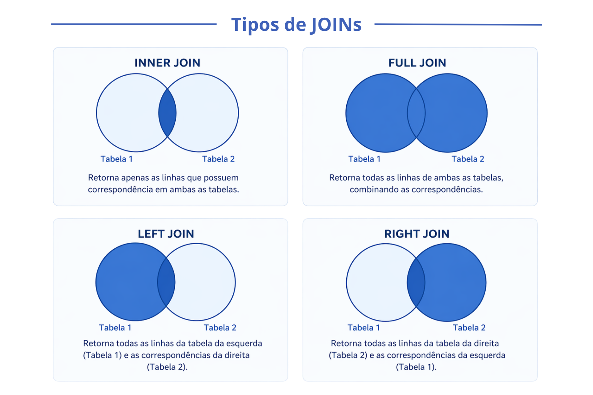

| Chamada | Equivalente | Descrição |
|---|---|---|
| merge(A, B, by="id") | inner join | Mantém apenas as linhas com correspondência nas duas tabelas. |
| merge(A, B, by="id", all.x=TRUE) | left join | Mantém todas as linhas de A. Linhas sem par em B viram NA. |
| merge(A, B, by="id", all.y=TRUE) | right join | Mantém todas as linhas de B. Linhas sem par em A viram NA. |
| merge(A, B, by="id", all=TRUE) | full join | Mantém todas as linhas de ambas as tabelas. |
Manipulação de dados
Agora imagine pegar várias tabelas soltas e transformá-las em uma única história coerente. Aqui você começa a “moldar” os dados: filtrar, juntar, organizar. É como montar um quebra-cabeça — só que você decide quais peças entram e qual imagem final quer revelar.
🔗 Junção de tabelas
No curso, temos 5 tabelas separadas que descrevem os mesmos participantes. Todas compartilham uma coluna id, que identifica unicamente cada indivíduo. Esse id é a chave para unir as tabelas com a função merge().
Acesse aqui as tabelas tratadas.

Os principais tipos de junção são controlados pelos argumentos all.x e all.y:
O all.x = TRUE (left join) é o mais usado no dia a dia: você parte de uma tabela principal e vai incorporando informações das demais.
# unir demografico com laboratorio pela coluna 'id'
dados <- merge(demografico, laboratorio, by = "id", all.x = TRUE)
# unir com mais tabelas em sequência
dados <- merge(dados, saude_percebida, by = "id", all.x = TRUE)
dados <- merge(dados, medidas_fisicas, by = "id", all.x = TRUE)
dados <- merge(dados, habitos, by = "id", all.x = TRUE)🔄 Reordenação
Reordenar colunas
Após unir tabelas, pode ser útil reorganizar a ordem das colunas.
# colocar 'id' e 'nome' primeiro, mantendo o restante
dados <- dados[, c("id", "nome", colnames(dados)[!colnames(dados) %in% c("id", "nome")])]Reordenar linhas
# ordenar por idade (crescente)
demografico[order(demografico$idade), ]
# ordenar por renda (decrescente)
demografico[order(demografico$renda_reais, decreasing = TRUE), ]
# ordenar por estado civil e, dentro de cada grupo, por idade
demografico[order(demografico$estado_civil, demografico$idade), ]✏️ Criar e transformar variáveis
Novas colunas são criadas atribuindo valores diretamente com $.
# criar uma coluna com a renda em salários mínimos (R$ 120,00 em 1997)
demografico$renda_sm <- round(demografico$renda_reais / 120, 2)Condicionais com ifelse()
A função ifelse() cria uma variável com base em uma condição: se a condição for verdadeira, atribui um valor; caso contrário, atribui outro.
# criar variável binária de renda
demografico$baixa_renda <- ifelse(demografico$renda_reais < 120, "Sim", "Não")Condicionais múltiplas com ifelse() aninhado
Quando há mais de duas categorias, os ifelse() podem ser aninhados um dentro do outro.
# categorizar escolaridade em níveis
demografico$nivel_escolaridade <- ifelse(
demografico$escolaridade_anos == 0, "Sem instrução",
ifelse(demografico$escolaridade_anos <= 4, "Fundamental I",
ifelse(demografico$escolaridade_anos <= 8, "Fundamental II",
ifelse(demografico$escolaridade_anos <= 11, "Médio",
ifelse(demografico$escolaridade_anos > 11, "Superior", NA)))))
unique(demografico$nivel_escolaridade)
#> [1] "Fundamental I" "Médio" "Sem instrução" "Fundamental II" "Superior" NA📊 Agrupar e resumir com aggregate()
A função aggregate() calcula uma estatística para uma variável e separada por grupos, como por exemplo a média de renda por sexo ou por estado civil.
# média de renda por sexo
aggregate(renda_reais ~ sexo, data = demografico, FUN = mean)
#> sexo renda_reais
#> 1 F 812.3241
#> 2 M 976.1147
# média de renda e idade por sexo (múltiplas variáveis resposta)
aggregate(cbind(renda_reais, idade) ~ sexo, data = demografico, FUN = mean)
#> sexo renda_reais idade
#> 1 F 812.3241 71.30851
#> 2 M 976.1147 70.82569
# média de renda por sexo e estado civil (múltiplos grupos)
aggregate(renda_reais ~ sexo + estado_civil, data = demografico, FUN = mean)Para contar observações por grupo, usa-se table().
# contagem por estado civil
table(demografico$estado_civil)
#> CASADO SEPARADO SOLTEIRO VIUVO
#> 748 87 235 524
# proporção (em %)
round(prop.table(table(demografico$estado_civil)) * 100, 1)
#> CASADO SEPARADO SOLTEIRO VIUVO
#> 47.2 5.5 14.8 33.1As principais funções usadas dentro do aggregate() são:
| Função | Descrição |
|---|---|
| mean(x) | Calcula a média de x |
| sum(x) | Soma os valores de x |
| median(x) | Calcula a mediana de x |
| sd(x) | Calcula o desvio padrão de x |
| min(x) | Retorna o menor valor de x |
| max(x) | Retorna o maior valor de x |
| length(x) | Conta o número de elementos de x |
Importante
Sempre use na.rm = TRUE nas funções de resumo quando houver valores nulos. Sem esse argumento, o resultado será NA se houver qualquer valor faltante. Exemplo: aggregate(renda_reais ~ sexo, data = demografico, FUN = mean, na.rm = TRUE).